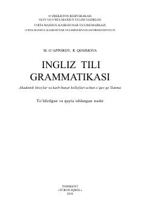

ITAkademik litsey va kollejlar uchun ingliz tili grammatikasi bo'yicha o'quv qo'llanma.
Mazkur o'quv qo'llanma akademik litseylar, kasb-hunar kollejlari o'quvchilari hamda ingliz tilini mustaqil o'rganayotganlarga mo'ljallangan. Kitobda ingliz tili grammatikasining asosiy qoidalari, fe'l turkumlari va ularning ishlatilish xususiyatlari batafsil tushuntirilgan.